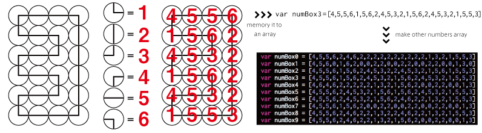
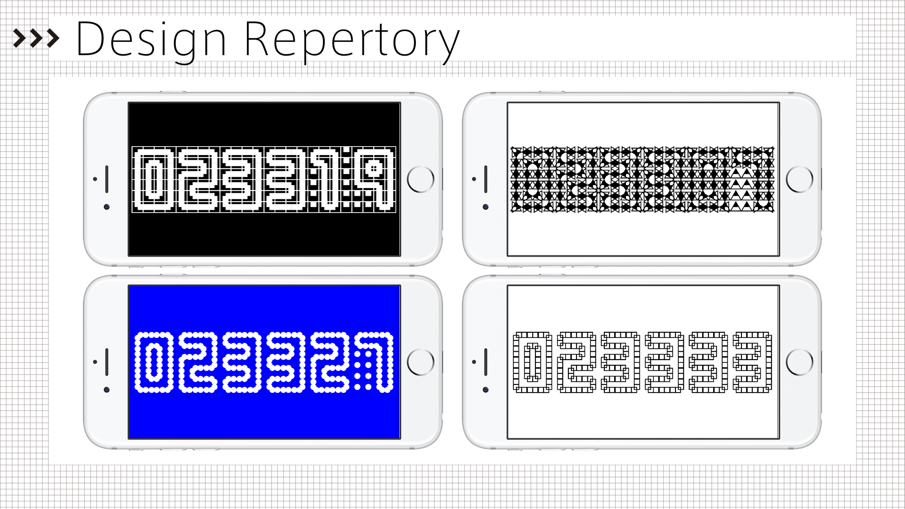

A/D Clock
a clock which shows you time by 144 analog clocks making 6 digital numbers
ダウンロードする
コンセプト
デジタル世界(PCの中)と現実世界の境界や関係性についてとても興味があり,時計には”アナログ時計”と”デジタル時計”という似た関係性があるのではないかと思い、それらの関係性や境界を体現化すべく、このアプリを制作しました. ネットやデジタルが普及するこの時代にアナログ的性質を掛け合わせると面白い化学反応が起こりやすい、そんな気がします.
制作
iOS Application : swift
144個の時計を制御するため,それぞれの時計の示す角度をパターン化して6つ用意しておき、0〜9までの大きい数字を表示する際にそれらのパターンを活かしてスムーズに表示させた.また動作を軽くするために,144個の時計のうち、次のアニメーションに別のパターンへアニメーションを変更するもの以外は命令を実行しないようにすることで全体の動作を軽くすることに努めました.時計のデザインをしっかりと見てもらうためにも画面いっぱいには数字を表示し、ボタンなどは基本的に表示せず、時計単体の状態で画面のどこかをタップすると画面下からぬるっとアニメーションしてボタンが表示され、設定画面は背景が透けて現在の時計デザインを確認しながらパターン変更可能なようにしました.アプリということもあり細かいアニメーションなどユーザーが気持ち良く使ってもらえるように実装を行いました.


受賞歴
ドイツのメディアセンターZKM主催のApp Art Award 2016にて入賞
第22回学生CGコンテスト エンターテイメント部門 入賞